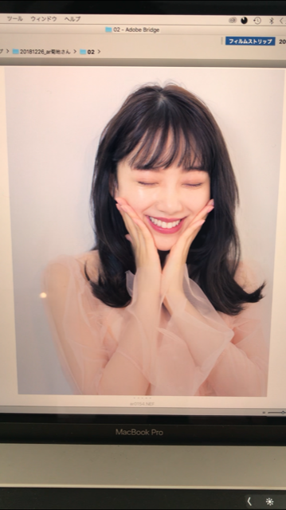
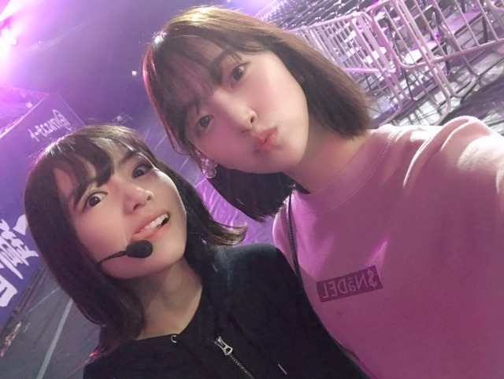

2019/0307Thuやほ
みなさん #みおなの日 でお祝い？を
してくださりありがとうございます。笑
友達からもみおなの日だ！と何件か連絡がきて
3月7日を特別に感じてしまっています。笑
どうせなら祝日にしてお休みにしたいなぁ
たくさん食べてたくさん寝る日✨
どうかな？？
といいつつも私は朝から撮影や振り入れをしていました〜合間に蘭世とご飯食べて元気をチャージしたよ！
朝ごはんは最近は味噌煮込みうどんを食べることが多くてあ〜〜東海県民やなぁとしみじみ。
名古屋飯は本当になに食べても美味しいの！
定期的に味噌が恋しくなる...

春春〜春ですね〜

塩アイス〜♩
初期から私を優しく見守っててくれてるふたり^ ^

当たり障りのない話 も個人的にすきな曲で披露できて嬉しかったです！
歌詞も振りもTHEアイドルでかわいいの✨

ねえ笑
この日奈子の悪い顔だいすき。笑
#同い年 #同期 #性格は正反対だけどどこか似てる
#ライバル #仲間 #好き
#堀北コンビ
2期生集まるとわちゃわちゃ
テンションおかしい子が多くて裏ではずっと笑っぱなしです。笑
京セラドーム4日間、凄く充実していました！
ライブってやっぱり楽しい✨✨
大阪まで来てくれた皆さんありがとうございます！
タオル うちわ サイリウム 笑顔
たくさん見れました。
そして西野さんの卒業ライブもありました。
正直まだ寂しいしどんどん背中を見ていた先輩がいなくなっていくことに焦りや不安も感じます...
たくさんのことを学んで、乃木坂っていいなぁって何度も感じて、1期生の方の煌びやかな存在があったからわたし達2期生が乃木坂に憧れ、頑張ってこれたんだなぁと改めて。
今までの西野さん含め先輩が作り上げてきてくださった大切なものを今いるメンバー、そしてファンの皆さんとで守っていきたいしもっともっと成長していなくちゃいけないなぁと強く思いました！
ダンスが元々苦手だった私がダンスを好きになり、パフォーマンスやライブを通して自分を魅せるっていうことの大切さを知れたのはいつもライブで先陣を切って輝いていた引っ張ってくれていた西野さんの存在のおかげです。
本当に、お疲れ様でした✨

ピンクメイクも春〜だけど
最近はオレンジ！に目がないです✨
今年の春はオレンジメイクを極めます！うむ！
では。
2019/03/07 21:00


コメント(427)
昨日のレコメン！から言ってたけども今日は未央奈の日！
祝日になっちゃえばいいのに〜
昨日、やっと初めてザンビをリアルタイムで見れました。
未央奈と与田ちゃんのあのシーン。
未央奈の演技力が存分に発揮されたシーンでしたね。
とっても良かった！
これからもお芝居のお仕事ができるといいね！
久々の塩アイス、ありがとね。
当たり障りのない話も素敵な曲だよね。
そして、なーちゃんのことにも触れてくれてありがとう。
もともと僕はなーちゃん推しなので、こういう風にブログを通して、思いを書き起こしてくれるのは有難い限りです。
なーちゃんを含め、卒業生や一期生たちがしっかりとした土台を作り上げてきたグループ。
未央奈はきっと、その次世代を担うキーパーソンの1人であると思います。
明るい未来に向かって、恐れずにみんなで沢山沢山、挑んでいってくださいね。
これからも応援しています。
体調に気をつけてくださいね！
またの更新、待ってます。
やっぱり同期には同期同士ならではの良さがあるから、見るだけでほっこりするんだろうね！（＾ν＾）
バスラお疲れ様！
明日も頑張ろう！
撮影振り入れお疲れ様でした。
元気チャージ出来て良かったですね。
#みおなの日 ばっちり載せました〜！
ライブお疲れ様～
レコメンおもしろかったよ！！
みおな大好き！！
3日間会場から見届けました！
初日はモニターで未央奈を探していましたが、欠席かなと思っていたところバレッタで登場し、感動のトークを聞いて涙が出て来ました。
これからも頑張ってください！
あと、握手会もよろしくお願いします！
では！
大好き〜
ピンクメイクのみおちゃんかわいい(；；)リボン？すごいかわいい(ᯅ̈ )♡
2期生だいすき！笑
これからも頑張ってください！
きいちゃんの顔面白すぎるし2人仲良すぎ
ダンス頑張って！
オレンジメイク楽しみにしてます！
応援してます。
すっごく可愛い！！！
写真全部保存したよ～！
ライブお疲れさまね！
ライブいつか参戦するのが夢です(*´ω｀*)
幕張握手会に行くから待っててね～♪
2期生頑張れ。
おめでとうo(*ﾟ∀ﾟ*)o❤️
今日は、307の日だねー
堀ちゃんの記念日が増えて、嬉しくて笑顔！
大阪ライブ見に行きました！
3日目だったので、2期生楽曲が2曲も聞けて、
更に堀ちゃんがセンターだから幸せで
超絶楽しかったよー
堀ちゃんの写真を見ると、心が温かくなります！
堀ちゃん推しでよかった！
堀ちゃん、大好きだよー
私は愛知県人ですが、岐阜市とかも近いですもんね。
名古屋飯いっぱい食べて元気つけてください。
来週の乃木坂工事中楽しみです。
堀さんの持ってる雰囲気が好きです。
姉、実菜の誕生日です
3人きょうだいで3人とも誕生日が名前の由来です
なので、今日は姉の誕生日です
以上です笑笑
みおなの好きな日と姉の誕生日が重なって嬉しいです
バレッタで登場したとき乃木どこで選抜発表されたときのこと蘇った。
これから新しい乃木坂が始まるんだなぁってワクワクしたな～(^^)
楽しいライブありがとう♪
最近すごいキャンペーンやってっからね。
何度か世話になっておる。
もうすぐ終わるけど。
これからも応援してるよ頑張れ！
307の日おめでとう！
バスラ、最高に良かったよ。
あの時間、あの場所にいれたことに感謝しています。
なぁちゃんの卒業はすごく寂しいけれど、最後まで笑顔だったなぁちゃんを気持ちよく見届けることができたかな。
大切な１期生がどんどん卒業しているけど、これからも大好きな乃木坂を全力で応援するよ！
ザンビ第７話で与田ちゃんを抱きしめるシーン、最高に良かったよ！繰り返し何回も何回もあのシーンを見てしまう。
スピッツの「楓」がまたいい演出してるよね！
１０日の全握楽しみにしてるね！
これからもみんなを笑顔にする堀ちゃんでいてください！
いつも可愛いなー
これからも頑張ってください
未央奈推しになってから307という数字が特別なものになりました！3月7日がよく食べてよく寝る祝日になるって最高ですね！いつかならないかなぁ…なんて笑
未央奈の言葉って一つ一つに想いが込められていて胸に染みます。私は乃木坂の現場に行き始めたのが最近だし、今回のバースデーライブもライブビューイングのみの参加だったけれど、日に日に乃木坂46っていうグループの素晴らしさを節々に感じます。どんどんグループ、メンバー、2期生、未央奈への好きが増していきます。
乃木坂を開拓した1期生がいて、憧れつつ目標にしつつ共にグループを作り上げた2期生がいて、さらに成長した乃木坂に憧れを抱いて入ってきた3期生4期生がいて…なぁちゃんの卒コンで涙を流したり寂しそうな顔を浮かべるメンバーに私も涙したし、ライブやMCやブログのコメントからメンバーみんなのグループへの愛を感じて、本当に感動しました。乃木坂を好きになれて良かったなぁって改めて感じた日でした。
歌やダンスを楽しそうにする未央奈を会場で見たいな、見るしかないなと感じたので、夏ツアーは絶対に応募します！
可愛い写真を沢山ありがとう！どれも可愛すぎる…目の保養です本当に。未央奈みたいに可愛くなりたいです…！インスタみたいに#で写真の説明をしているのも可愛い♡
私の初握手の日はピンクメイクの未央奈かなオレンジメイクの未央奈かな…楽しみです！
いつもコメントが長文になってごめんなさい(;_;)笑
風がまだまだ冷たいので、身体に気をつけてお仕事頑張ってください！
未央奈ちゃんのダンスが好きです、褒められたんだよね、嬉しいなあ。みんなに認められるアイドルになって欲しいその一心です。
1期生が多く旅立ち寂しくなるけど2期生特有の明るさ、うるささ（笑）で乃木坂を大きくしてくれたら嬉しい。
今日も可愛いね大好き
レコメンでも未央奈の日って言っていましたよね！
特に何もしなかったけど（笑）、
意識だけはしていましたね！
意識するだけ、未央奈ちゃんのことを
考えているんだって思って
ちょっとだけ自慢気での一日でした！！！
たかが風邪とは言わずに、
これからも心配させないぐらいに
頑張ってくださいね！！！
応援しています！！！
京セラドーム行きました！
偉大な1期生の背中を追いかけるのは大変だけど、
未央奈も2期生の中でずっと先頭を走ってきたわけだし、3期生4期生から追いかけられる存在だと思うよ
そう思える程にキラキラ輝いていたライブでした
お疲れ様
こちらもやっと春に近づいているっていうか、冬が終わりに近づいたって感じだよ～。
お疲れ様でした！
みおなの日最高だすわ
何時も応援しています
どうか御体に気をつけて、
何時も元気で居て下さい。
ずっと大好き！
またライブで輝いてる未央奈さん見に行きますね！
あ～ありましたね。
3月7日ですもんね(笑)
あ、おめでとうございます。
味噌ね。
担々麺を除けば、味噌ラーメン。
煮込みも味噌ですね～
日奈子さんね。
よく見かけますよ。その顔(笑)
西野さんね～
これからのご活躍を祈るばかりです。
ん？おれんじ･･･
柑橘ですね！！！
あれ？体調･･･(笑)
身体しっかり休めてね(*^^*)
名古屋飯美味しいよね、味噌煮込みうどん、味噌カツ、手羽先、台湾ラーメンどれもオススメ！
東海地区で売ってるつけて味噌かけて味噌かかせない！
モーニングボリュームあっていいよね！
これからも応援してます！
＃みおなの日、めでたいです。
沢山の祝福は、愛されている証拠ですね。
沢山食べて、沢山寝て、沢山映画も観るのも良い日ですね。
体調は、そこそこ良さそう？ですかね。
レコメンでは、かなり元気そうで一安心しましたよ。
でも、声が若干苦しそうなのが心配です。。
夜のジェットコースターは、夜景とスリルが楽しめますが、なるべく夏場が良いかな。
朝に味噌煮込みうどんですか、一日頑張れそうですね。
味噌は日本人の宝ですよね、自分は味噌カツか味噌煮込みうどん。
皆さんと楽しそうですね。
堀北コンビは、最強です。
引き寄せられます。
京セラドーム4日間、ホントにお疲れ様でした。
想像を絶するハードさだったのでしょうね。
ファンのためとは言え、頭が下がります。
箸くんもお見事でしたよ。
自分は、4日目の西野さん卒業コンサートを配信で観ました。
西野さんのラストで、いろいろ感傷的ではありましたが、それ以上にインフルエンサーで堀さんがいなかった時の焦燥感、半端無かったです。
体調不良でダウン？とさえ勘ぐりましたよ。
別れ際、もっと好きになる が始まって、ホント安心したのと堀さんの気持ちの入り方に鳥肌が立ちました。あの感覚は単なる高揚感ではなく、超越したオーラに惹かれた結果だと思います。
嫉妬の権利 もですが、元々好きだったこの２曲は、更に好きになり毎日聴いてます。
他のグループも力をつけて来てるようですし、乃木坂も守りに入らず、挑戦し続けて欲しいです。
西野さんや先輩の皆さんが卒業され、不安もあるでしょうが、先輩達の意志を引き継ぎ、その想いを築き上げたものを大切にしつつ、それを超えて行って欲しいです。
ファンが支えてる事を信じて。
輝き魅せて下さいね。
頑張って行きましょう！
バスラ、一日目と二日目行きましたー。
楽しすぎたし、体調悪かったって聞いて心配してました。
これからも体調には気をつけてね。
応援してます！
きーちゃんと未央奈のコンビ好き好き！
また写真とかブログとか755に上げてください！
体調には気をつけて頑張ってください
応援してます
そうでした、みおなの日でしたね！
毎日楽しく過ごしているのが
堀ちゃんのブログを見て
よくわかりますよ‼
食べるもの食べて祝日か～！
さすが堀ちゃんらしいっすね！
サイリウムカラーのオレンジ
メイクを今春、極めてください‼
またブログでもあげてね！
堀北コンビもますます
仲がよくなってるのが
写真からわかるよ～‼
きいちゃんを大切にして、
より良い乃木坂をつくっていってね！
そしてバスラもお疲れ様でした！
｢当たり障りのない話｣は、
お風呂でよく、｢夕暮れ、近くにある
商店街～♪｣と歌っています！
好きな歌のひとつですよ‼
これからもライブ等々、お仕事頑張ってね！
私も、11日に卒業式なので今までお世話になった
先生たちに感謝しないとな～と思っています！
もちろん、堀ちゃんにも感謝してます！
それでは、長くなりましたが
次回の更新も楽しみにしてますよ～‼
おやすみおな～！
#みおなの日、楽しんだよ〜！！！
卒ラのライビュみたよお〜！
未央奈サイリウム持って〜（笑）
楽しかった〜！！
若のポジションに入ってたの良かった！
お掃除お掃除（＾ω＾）♪
LIVEのパフォーマンス見て
未央奈推しになったから七瀬ちゃんには
感謝だな〜！新しい乃木坂作っていってね〜！
2期ファイト☆
ばいぃ
改めてバースディライブお疲れ様。
いつ見ても堀北コンビは素敵だね。
また久し振りのレコメン待ってたよ。
やっぱりレコメンは堀ちゃんがいてこそレコメンだからね。
コメントする